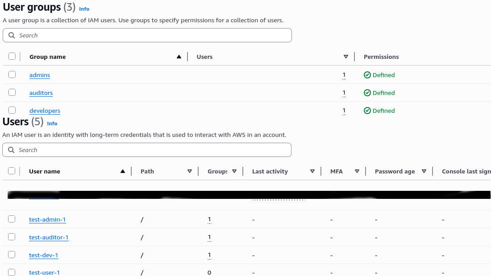
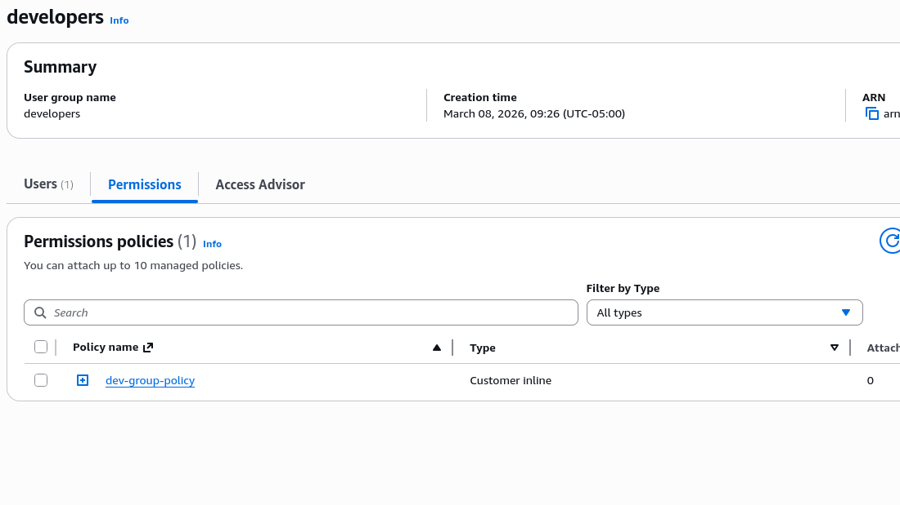
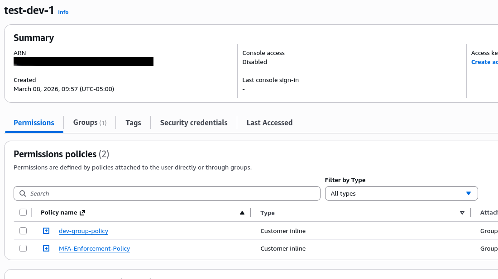
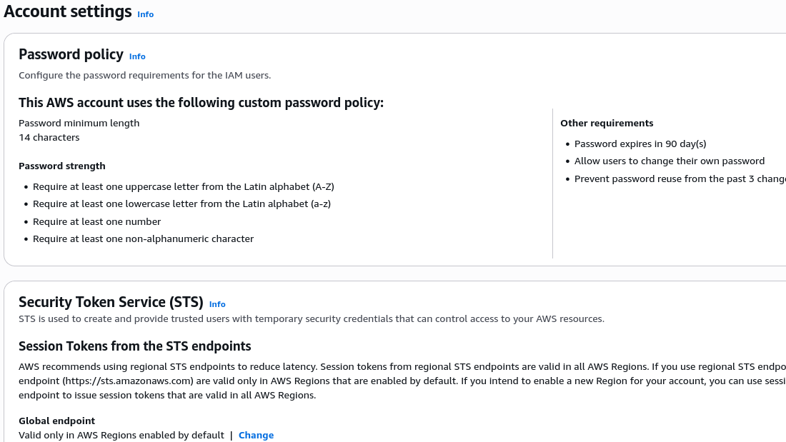
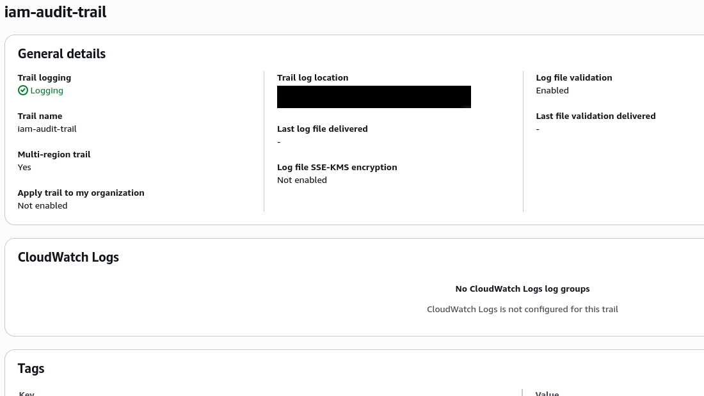

AWS IAM Security Foundation
COMPLETED (March 2026)
Overview
This project establishes a foundational understanding of AWS Identity and Access Management (IAM) through hands-on implementation of security best practices. The focus is on practical application of least privilege, audit readiness, and documentation—skills directly transferable to RMF control implementation.
1. IAM Users and Groups
- Created user groups with specific job functions (admin, developer, auditor)
- Assigned users to appropriate groups
- Implemented group-based permissions instead of individual user policies

Notes:
Using the AWS Console, I created a series of groups and users - one user for each group, and one floating user to demonstrate that while users can be put into groups, they don't necessarily need to be. Groups are used to logically categorize users into their respective roles, and are a great way to add and remove permissions for a user quickly, as the users would inherit whichever permissions are assigned to the groups in which they reside.
2. Least Privilege Policies
- Created custom policies with explicit allow for required actions only
- Used IAM policy simulator to validate permissions
- Example: Developer policy allows EC2 Describe but not Terminate
Developer Group Policy

Full policy JSON:
Notes:
As each user was put into their respective groups, it was critical to think about what level of permissions each would need. Accidentally placing a developer into the admin group, for instance, would allow a developer to have much higher-level access than what is needed for their job. By exercising the principle of least privilege when assigning users to groups, I have ensured that user test-dev-1 falls under the restrictions listed in the policy above.
This policy, which is attached to the developers group, restricts this group's users to the following actions:
- The users of this group can only act within EC2 and S3.
- In EC2, they are allowed to: see, start, stop, reboot, run and terminate instances. Effectively, they have the ability to provision and deprovision EC2 resources as needed. This privilege could very quickly cause financial issues if an unauthorized user had this level of access.
- In S3, group members are able to list/see buckets, export objects from them, put objects into them, and delete objects entirely. Much like in EC2, this is a powerful ability, as, in the wrong hands and with poor backup implementation, data could be lost permanently, or sensitive data could be exposed and leaked. S3 configurations have consistently been one of the biggest issues in data management.
3. MFA Enforcement
- Created policy requiring MFA for console access
- Attached MFA policy to groups for inheritance
- Demonstrated policy inheritance through group membership
MFA Policy Inheritance

MFA Enforcement Policy JSON:
Notes:
This MFA policy uses a conditional Deny statement - unless MFA exists, access to all resources and actions is denied. This is both very simple and very effective.
With this policy in place, password reuse, credential stuffing, and leaked passwords become nearly irrelevant as attack vectors. An attacker with only the user's password cannot access anything.
However, MFA isn't foolproof. Adversary-in-the-Middle (AitM) attacks can proxy authentication in real-time, capturing both password and MFA token during an active session. This requires user interaction with a fake login page and represents a more targeted attack.
The key takeaway: defense in depth. MFA is essential but not sufficient - it's one critical layer among many, including conditional access policies and user awareness.
4. Password Policy
- Configured password complexity requirements
- Set password expiration and rotation policies
- Prevented password reuse

Notes:
This password policy balances security requirements with usability.
- The policy requires a minimum of 14 characters. Longer passwords are more difficult to guess and significantly harder to brute force. Adding complexity requirements on top of the length ensures that even common password cracking techniques face substantial resistance.
- While modern NIST guidance recommends moving away from periodic password changes, 90-day expiration remains a requirement in many compliance frameworks, including DoD STIGs and FedRAMP. I included it to align with these standards while noting that best practices are evolving.
- Password reuse prevention (3 passwords remembered) stops users from cycling through favorites. If credentials are leaked in an unrelated breach and a user rotates between the same few passwords, this control limits the window of exposure and reduces the effectiveness of credential stuffing attacks.
- This configuration aligns with AWS Benchmarks and common DoD STIG requirements. In production, the exact settings would be changed based on whichever framework is being implemented.
- This exercise reinforced that password policies involve inherent trade-offs. Maximum complexity can drive users to predictable patterns or sticky notes, so effective security requires balancing technical controls with human behavior.
5. Credential Report Analysis
- Generated and downloaded IAM credential report
- Identified unused credentials and old access keys
- Documented findings and remediation steps
Credential report screenshot not included - new environment shows clean baseline. Process documented below.
Notes:
Given that this is a fresh setup, there were no old access keys to report and no stale passwords to revise. I checked password last used dates, access key age, and MFA status across all users. Everything came back clean, which is exactly what I expected for a new environment.
Even though the account is new, I generated the report and looked it over to ensure everything was being logged properly. There's nothing to remediate - this is a solid baseline to build off of.
In a production environment, this report would be generated based on the framework being followed and the environment in which it is running. Most frameworks recommend monthly or quarterly reviews.
6. CloudTrail Audit Logging
- Enabled CloudTrail in all regions
- Configured log file validation
- Reviewed sample IAM events

Notes:
CloudTrail logs every API call made in the account. For this project, I wanted to make sure all IAM activity was being captured - user creation, policy changes, logins, etc.
I enabled a multi-region trail so it catches activity across all regions, not just the one I'm working in. Log file validation is turned on, which means AWS signs the logs and I can verify they haven't been tampered with. This matters for compliance - if logs can be altered, they're not admissible as evidence.
I left CloudWatch Logs disabled intentionally. It would let me set up real-time alerts, but that's overkill for this project and would add cost. The logs are safely stored in S3, encrypted by default.
I reviewed the event history filtered to IAM and could see CreateUser, AttachGroupPolicy, and ConsoleLogin events. Everything I did in the console showed up, which confirms logging is working as expected.
In a production environment, I'd probably set up some basic alerts - maybe notify when new users are created or policies are changed. But for now, just knowing the logs exist and are validated is enough.
Key Takeaways
- Groups over users. Attaching policies to groups instead of individual users makes permission management scalable. Add a user to the developers group and they automatically get the right access. Remove them and it's gone. Simple.
- Least privilege is a process, not a one-time thing. I started with broad permissions and narrowed them down as I understood what each group actually needed. The developer policy looks the way it does because I asked "what does a developer actually need to do?" not "what's the safest minimal set?"
- MFA enforcement via policy is better than encouragement. A conditional Deny statement means users don't have a choice. No MFA, no access. That's the difference between security theater and actual control.
- Audit everything, even when nothing is happening. The credential report was boring because everything is new. That's fine - now I have a baseline. Next month, next quarter, I'll know what changed.
- CloudTrail is the source of truth. Every API call I made showed up in the logs. If something goes wrong later, I can trace it back to exactly who did what and when. That's non-negotiable for compliance.
- Documentation matters as much as configuration. The policies themselves are just JSON. The notes I wrote here explain why they exist and what trade-offs I considered. Six months from now, future me will thank present me.
IAM sets the boundaries, but it doesn't enforce behavior. The technical controls are only half the equation - the other half is users operating within those boundaries. This project gave me the technical half. The rest comes with time and experience.
Next Steps
This foundation will feed directly into my upcoming RMF Control Implementation project, where I'll map these IAM configurations to specific NIST 800-53 controls (AC-2, AC-3, AC-7, etc.) and develop implementation statements.